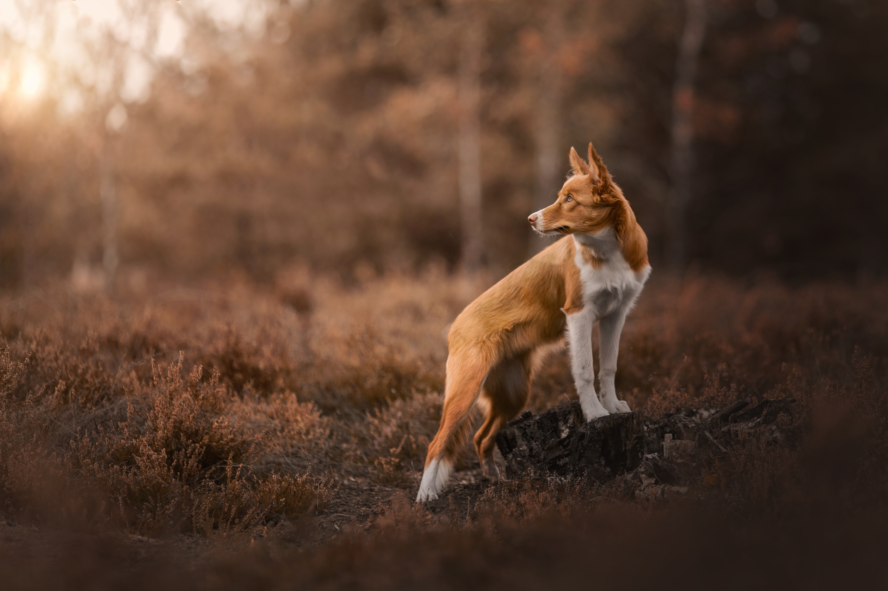
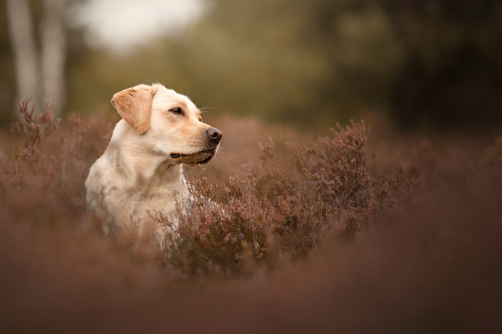

Indywidualne warsztaty fotografii psów oraz obróbki zdjęć!
Warsztaty są przeznaczone zarówno dla osób, które dopiero zaczynają swoją przygodę z fotografią, jak i dla bardziej zaawansowanych użytkowników aparatów. Zajęcia ze mną pomogą połączyć miłość do psów oraz fotografię w jedną pasję, która zaowocuje piękniejszymi zdjęciami Twojego czworonoga, promocją hodowli czy zwiększoną ilością adopcji.
Program warsztatów przygotowuję pod indywidualne potrzeby uczestnika. W zależności od preferencji zajęcia mogą być poprowadzone z samej postprodukcji lub nauki fotografii w plenerze przy udziale psiego modela.
Na części dotyczącej fotografii dowiesz się:
|  |
|
Ponadto, jeśli przedstawisz mi swoje portfolio, omówię z Tobą mocne i słabe cechy Twoich zdjęć, a także podpowiem co zmienić, aby poprawić potencjał zdjęcia. Dzięki tej wiedzy unikniesz w przyszłości błędów i poczynisz większy progres w fotografii.
Na części dotyczącej postprodukcji poznasz program Photoshop:
|
 |
Jeśli jesteś zainteresowany/na udziałem w warsztatach to serdecznie zapraszam do kontaktu w celu ustalenia szczegółów oraz planu: